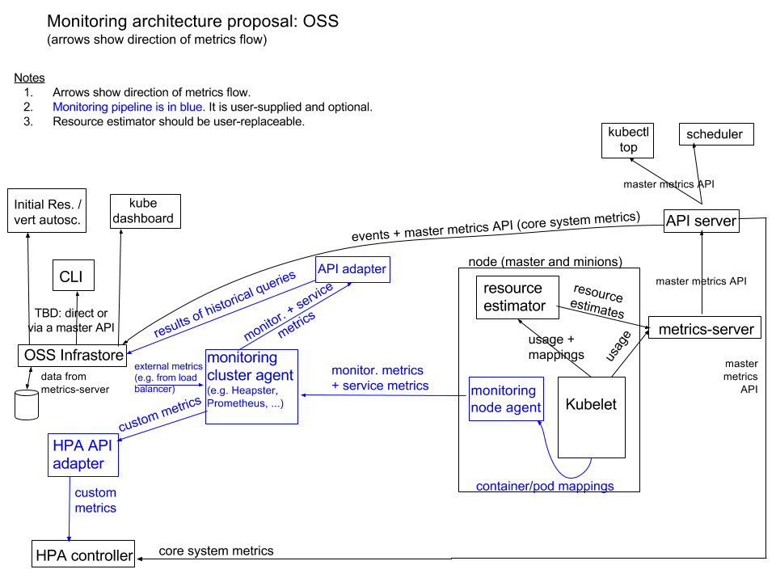

附录D：部署 metrics-server 插件
metrics-server 通过 kube-apiserver 发现所有节点，然后调用 kubelet APIs（通过 https 接口）获得各节点（Node）和 Pod 的 CPU、Memory 等资源使用情况。
从 Kubernetes 1.12 开始，kubernetes 的安装脚本移除了 Heapster，从 1.13 开始完全移除了对 Heapster 的支持，Heapster 不再被维护。
替代方案如下：
- 用于支持自动扩缩容的 CPU/memory HPA metrics：metrics-server；
- 通用的监控方案：使用第三方可以获取 Prometheus 格式监控指标的监控系统，如 Prometheus Operator；
- 事件传输：使用第三方工具来传输、归档 kubernetes events；
监控架构

没有安装 metrics-server 或 heapster 时，kubeclt top 命令将不能使用：
$ kubectl top node
Error from server (NotFound): the server could not find the requested resource (get services http:heapster:)
安装 metrics-server
从 github clone 源码：
$ cd /opt/k8s/work/
$ git clone https://github.com/kubernetes-incubator/metrics-server.git
$ cd metrics-server/deploy/1.8+/
修改 metrics-server-deployment.yaml 文件，为 metrics-server 添加三个命令行参数：
$ cp metrics-server-deployment.yaml metrics-server-deployment.yaml.orig
$ diff metrics-server-deployment.yaml.orig metrics-server-deployment.yaml
32c32
< image: k8s.gcr.io/metrics-server-amd64:v0.3.6
---
> image: gcr.azk8s.cn/google_containers/metrics-server-amd64:v0.3.6
35a36,37
> - --metric-resolution=30s
> - --kubelet-preferred-address-types=InternalIP,Hostname,InternalDNS,ExternalDNS,ExternalIP
- 使用微软的 grc 镜像；
- --metric-resolution=30s：从 kubelet 采集数据的周期；
- --kubelet-preferred-address-types：优先使用 InternalIP 来访问 kubelet，这样可以避免节点名称没有 DNS 解析记录时，通过节点名称调用节点 kubelet API 失败的情况（未配置时默认的情况）；
部署 metrics-server：
$ cd /opt/k8s/work/metrics-server/deploy/1.8+/
$ kubectl create -f .
查看运行情况
$ kubectl -n kube-system get all -l k8s-app=metrics-server
NAME READY STATUS RESTARTS AGE
pod/metrics-server-77df59848f-sjjbd 1/1 Running 0 18s
NAME READY UP-TO-DATE AVAILABLE AGE
deployment.apps/metrics-server 1/1 1 1 19s
NAME DESIRED CURRENT READY AGE
replicaset.apps/metrics-server-77df59848f 1 1 1 19s
查看 metrics-server 输出的 metrics
kubectl get --raw https://172.27.138.251:6443/apis/metrics.k8s.io/v1beta1/nodes | jq .
kubectl get --raw https://172.27.138.251:6443/apis/metrics.k8s.io/v1beta1/pods | jq .
kubectl get --raw https://172.27.138.251:6443/apis/metrics.k8s.io/v1beta1/nodes/<node-name> | jq .
kubectl get --raw https://172.27.138.251:6443/apis/metrics.k8s.io/v1beta1/namespace/<namespace-name>/pods/<pod-name> | jq .
- 替换 为实际内容；
- /apis/metrics.k8s.io/v1beta1/nodes 和 /apis/metrics.k8s.io/v1beta1/pods 返回的 usage 包含 CPU 和 Memory；
使用 kubectl top 命令查看集群节点资源使用情况
kubectl top 命令从 metrics-server 获取集群节点基本的指标信息：
NAME CPU(cores) CPU% MEMORY(bytes) MEMORY%
k8s-01 177m 2% 9267Mi 58%
k8s-02 364m 4% 10338Mi 65%
k8s-03 185m 2% 5950Mi 37%
参考
- https://kubernetes.feisky.xyz/zh/addons/metrics.html
- metrics-server RBAC：https://github.com/kubernetes-incubator/metrics-server/issues/40
- metrics-server 参数：https://github.com/kubernetes-incubator/metrics-server/issues/25
- https://kubernetes.io/docs/tasks/debug-application-cluster/core-metrics-pipeline/
- metrics-server 的 APIs 文档。